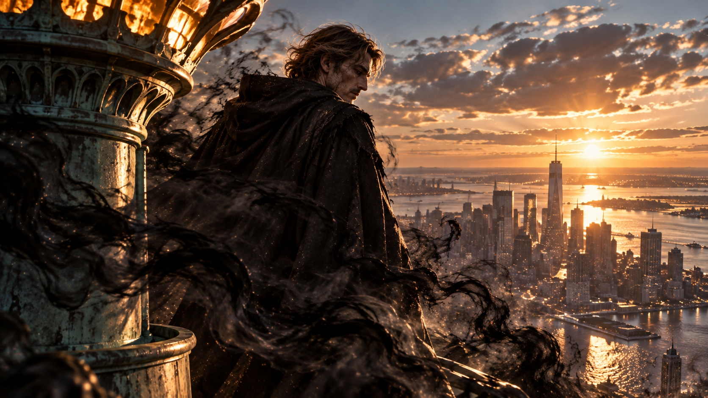
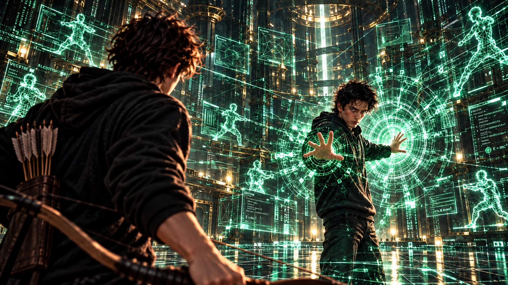
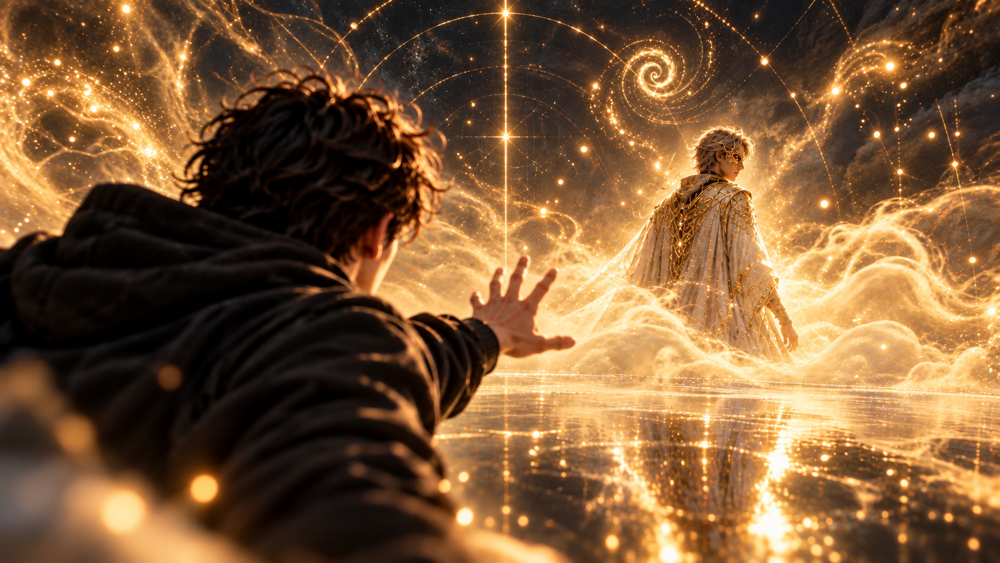

WHITE MAGIC ART STUDIO
第七章
雷之演算法
美國・紐約・曼哈頓
清晨六點四十七分。
曼哈頓早已甦醒。
計程車的喇叭聲此起彼落，行人端著咖啡匆忙穿越街口，地下鐵從城市深處轟隆駛過。高樓之間，清晨的陽光逐漸照亮街道，為這座從不真正沉睡的城市揭開新的一天。
沒有人注意到，街角的陰影裡，不知何時多出了一團黑霧。
那霧濃稠得不像自然形成，緊貼著地面緩緩流動，彷彿正在尋找什麼。
一名穿著西裝的男子快步經過。
黑霧悄悄碰上他的皮鞋。
男人忽然停下腳步。
他低頭看去，似乎察覺到了什麼異樣。
下一秒，手中的咖啡滑落。
啪！
紙杯撞上地面，褐色液體濺滿人行道。
而那名男子，已經消失了。
周圍的行人依舊來來往往。
沒有人尖叫，甚至沒有人停下腳步。彷彿剛才站在那裡的男人，從來不曾存在過。
黑霧繼續向前。
它穿過人群，滑過街道，沿著一條又一條狹窄的巷弄蔓延。
每當有人碰觸到那團黑暗，身影便會悄無聲息地消失。
街角的垃圾桶旁，一隻流浪狗忽然豎起耳朵。
牠緊盯著逐漸靠近的黑霧，喉嚨裡發出低沉的警告聲。
「汪！汪汪！」
黑霧停住了。
流浪狗向後退了一步，背上的毛髮根根豎起。
下一瞬間，黑暗猛地向前湧去。
吠聲戛然而止。
街道再次只剩下車輛與人群的喧囂。
彷彿什麼都沒有發生。
然而，黑霧並未停下。
它開始加速。
沿著鋼鐵與玻璃構築的街道飛快穿梭，越過一個又一個街區，朝城市西側奔去。
不久後，哈德遜河出現在前方。
河面上，晨風捲起層層浪花。
黑霧卻沒有絲毫遲疑。
它貼著水面疾馳，逆著風越過河流，朝遠方那座矗立於晨曦之中的巨大雕像而去。
自由女神像。
高舉的火炬迎向初升的朝陽，第一道晨光落在銅綠色的冠冕上，為那張莊嚴的面容鍍上一層淡淡的金色。
黑霧沿著基座攀附而上。
越過長袍的褶皺，繞過高舉的手臂，最後抵達火炬旁的高處。
它停了下來。
狂風之中，黑色霧氣開始向內收縮。
凝聚。
扭曲。
逐漸勾勒出一道人形輪廓。
片刻後，一名高大的男人站在火炬旁。
他身披破舊的深色斗篷，兜帽低垂，遮住了大半張臉。
腳下，是逐漸甦醒的紐約。
無數車輛沿著道路流動，遠處的高樓映照著清晨的陽光。從這樣的高度望去，整座城市彷彿只是一幅精密而繁忙的地圖。
男人一動不動。
直到一陣強風吹過，掀起了他的兜帽。
晨光落在那張隱藏於陰影中的側臉。
那是一張柴克再熟悉不過的面容。
筆直的鼻樑，分明的眉骨，還有那道曾經在無數張照片裡出現的輪廓。
只是照片中的男人，總是帶著溫暖的笑容。
眼前這個人卻沒有。
他緩緩睜開雙眼。
那雙眼睛裡沒有溫度，也沒有任何笑意。
只有深不見底的黑暗。
十五年前，整個安德烈家都相信一件事。
詹姆斯・安德烈，已經死了。
男人靜靜望向遠方。
下一秒，黑霧再次從他的腳下蔓延開來。

＊
美國・猶他州・鹽湖城・東湖地下教會
「接下來，是最後一種。」
克里斯走向訓練場中央。
安娜、亞當與潔西卡陸續退到場邊，將偌大的訓練空間留給他。
柴克站在另一側，目光緊緊追隨著哥哥。
經過剛才兩場精彩的展示，他已經迫不及待想知道，克里斯究竟能做到什麼程度。
「元素使。」
克里斯張開右手。
嗡——
一道翡翠綠色的光芒從掌心亮起。
那不是安娜使用的金色雷電，也不是纏繞在武器上的雷光。
而是一個細小的符號。
接著是第二個。
第三個。
數十個。
數百個。
無數翡翠綠色的符號從克里斯身邊緩緩浮現，宛如一場由數據構成的細雨。
柴克慢慢抬起頭。
整座訓練室正在改變。
原本平整的牆面浮現出一層層半透明介面，黑色合金地板逐漸化為發光的網格。無數數據、座標與幾何模型在半空中排列，複雜的程式碼沿著不同方向流動。
那些符號不斷交錯、組合，最後形成一個龐大而精密的立體空間。
柴克看得目瞪口呆。
「這些……都是你做的？」
「算是。」
克里斯抬起手，一顆綠色光球在掌心逐漸形成。
「剛才你已經看過術器使和靈獸使了。」
他輕輕揮動手指。
光球向外延伸，逐漸形成安娜那把雙頭劍的輪廓。
「術器使將元素導入術器，透過專屬的武器發揮力量。」
影像再次改變。
雙頭劍化作無數光點，重新組成艾波琳的模樣。
「靈獸使則透過與靈獸共享靈魂，彼此配合來使用聖術。」
最後，所有影像同時消失。
只剩下一道純粹的綠色雷光，在克里斯掌心輕輕跳動。
「至於元素使……」
他緩緩握住那道雷光。
「我們不需要透過術器或靈獸來施展力量。」
柴克盯著哥哥的手。
「所以元素使可以直接控制元素？」
「沒錯。」
「那你控制的是雷？」
「更精確一點……」
克里斯抬起食指。
一道細小的電弧在指尖跳動。
「是構成雷電的基本現象。」
柴克皺起眉頭。
「……你可以講得像人話一點嗎？」
克里斯笑了。
「好吧。」
他輕輕一揮手。
無數細小的綠色粒子浮現在兩人之間。
「你應該知道，電流和帶電粒子的移動有關吧？」
「這個我知道。」
「很好。」
粒子開始沿著同一個方向移動。
速度越來越快。
啪！
一道細小的電弧突然在半空中閃過。
柴克本能地眨了一下眼。
「而閃電，就是大規模電荷分離與放電所產生的現象。」
克里斯張開手，電弧再次分散成無數粒子。
「既然我的聖術能夠操控雷元素，我便開始研究，能不能進一步干涉電子的運動。」
那些粒子隨著他的話語重新排列。
逐漸形成一道道規律的流線。
柴克看著眼前的變化。
「然後呢？」
克里斯沒有回答。
只是打了個響指。
啪。
訓練室裡的燈光突然全部熄滅。
「喂！」
柴克嚇了一跳。
下一秒，燈光再次亮起。
不只是燈光。
牆面上的所有螢幕、控制台、感應裝置與通訊設備，也在同一瞬間啟動。
整座訓練場彷彿突然甦醒，無數綠色介面在空中接連展開。
「電子設備。」
克里斯看著他。
「只要是依靠電子運作的系統，我就有機會介入。」
柴克緩緩環顧四周。
他第一次真正意識到，哥哥的能力究竟能延伸到多大的範圍。
「所以那天晚上……」
克里斯轉頭看向他。
「我的電腦。」
柴克說。
「你就是這樣出現的？」
「對。」
克里斯抬起右手。
翡翠綠色的程式碼開始沿著他的指尖向上蔓延。
柴克的表情慢慢變了。
因為哥哥的手，正在消失。
並不是受傷，也不是被某種力量吞噬。
而是逐漸化為無數細小的綠色光點。
指尖。
手掌。
手腕。
接著是整條手臂。
那些光點不斷向上延伸，逐漸覆蓋克里斯的肩膀、胸口與臉龐。
不到幾秒鐘，站在柴克面前的克里斯，已經變成一道由無數綠色數據構成的半透明人影。
和那天晚上一模一樣。
柴克下意識屏住呼吸。
即使已經看過一次，他仍然覺得難以置信。
「我可以利用雷元素，暫時將自己的物質結構轉換成電子化狀態。」
克里斯抬起手。
一道道綠色字符從掌心流過，彷彿有生命一般。
「在這種狀態下，我可以進入電子設備，也能透過演算法，在特定範圍內重新建構周圍的環境。」
他向前踏出一步。
腳掌落地的瞬間，黑色合金地板便化成了一片發光的網格。
綠色光芒向四面八方迅速擴散。
一公尺。
五公尺。
十公尺。
牆壁、天花板，以及訓練室內的所有裝置，逐漸被無數程式碼覆蓋。
柴克站在場中央，彷彿整個現實世界正在眼前被重新編寫。
他抬起頭。
無數綠色數據從高處緩緩落下，宛如一場永不止息的雷雨。
「這就是……」
克里斯的身體重新凝聚成實體。
「雷之演算法。」
他停了一下，嘴角微微揚起。
「至少……這樣講比較酷。」
柴克看著哥哥，又望向周圍那片由數據構成的世界。
「你自己開發的？」
克里斯點頭。
「花了很多年。」
柴克沒有立刻接話。
他再次環顧四周，眼中滿是驚嘆。
過了片刻，他才輕聲說：
「……很厲害。」
克里斯微微一怔。
似乎沒想到弟弟會這麼直接地稱讚他。
「謝了。」
柴克重新看向那些漂浮的程式碼。
「所以在這裡面，你想做什麼都可以？」
「沒有那麼誇張。」
克里斯揮了揮手。
其中一部分程式碼開始消退。
「演算法有範圍，也有運算極限。範圍越大、環境越複雜，我需要的時間就越長。」
柴克若有所思地點頭。
「如果有人在你完成之前攻擊你呢？」
「那就是問題。」
克里斯回答得很乾脆。
柴克低頭思考。
他開始明白，這並不是一種無所不能的能力。
克里斯必須理解環境、建立模型，再透過自己的力量干涉其中的電子系統。
如果沒有足夠的時間，或者遇上超出運算能力的狀況，再厲害的演算法也可能失效。
「所以你真正厲害的不是雷電。」
柴克忽然說。
克里斯轉頭看向他。
「是你知道怎麼用它。」
短暫的沉默後，克里斯露出了笑容。
「開始有點像聖術師了。」
柴克沒有回答。
他只是再次望向周圍那些緩緩流動的程式碼。
在這之前，他一直以為哥哥只是個整天喜歡待在電腦前面的人。
無論是程式設計、電子設備，還是那些他完全看不懂的技術，似乎都只是克里斯的興趣。
直到現在，他才終於明白。
那些東西從來不只是興趣。
克里斯早已將自己理解世界的方式，變成了獨一無二的聖術。
＊
「所以……」
柴克忽然收回視線。
「我的呢？」
克里斯看著他。
「什麼？」
「你們都有自己的東西。」
柴克指向場邊的安娜。
「她有那把誇張得要命的劍。」
接著看向潔西卡。
「她有艾波琳。」
最後，他重新看向克里斯。
「你有這個。」
他指向整座綠色世界。
「那我有什麼？」
克里斯沉默了一會兒。
「不知道。」
柴克愣住。
「……你不知道？」
「不知道。」
「我不是雷翼嗎？」
「雷翼是你的身分。」
克里斯看著他。
「不是答案。」
柴克皺起眉頭。
克里斯走到他面前。
「每個聖術師的能力，都和他自己有關。」
他停頓了一下。
「我可以告訴你安德烈家的歷史，可以教你雷元素的原理，也可以告訴你爸爸以前是怎麼戰鬥的。」
柴克安靜地聽著。
「但我沒辦法告訴你，柴克・安德烈最後會成為什麼樣的聖術師。」
克里斯輕輕拍了拍弟弟的肩膀。
「那個答案，得由你自己找到。」
柴克低頭望向雙手。
空空的。
沒有雷光。
沒有武器。
也沒有任何特別的變化。
「……那我要從哪裡開始？」
克里斯看了他幾秒。
接著，忽然轉身走向場邊的武器架。
他的目光掃過長劍、短刃與長槍，最後停在其中一把訓練弓上。
柴克也跟著望了過去。
克里斯取下長弓，轉身拋向弟弟。
「接著。」
柴克穩穩接住。
他低下頭，手指不自覺地滑過弓身。
熟悉的重量。
熟悉的觸感。
「……你故意的？」
「當然。」
克里斯拿起一袋訓練箭矢，遞到他面前。
柴克接過箭袋，熟練地背到身後。
「還記得森林那晚嗎？」克里斯問。
柴克當然記得。
大雪。
箭靶。
還有那顆被自己一箭射穿的雪球。
「你說過，射箭會讓你平靜。」
柴克看著手裡的弓。
「……你竟然記得，我自己都快忘了。」
「我記得很多事情。」
克里斯停頓了一下。
「尤其是跟你有關的。」
柴克抬頭看了哥哥一眼。
沒有說話。
克里斯則走向訓練場中央。
「你從小就會射箭，而且射得很好。」
「籃球也是。」
柴克忍不住補充。
「對，籃球是你近期新的才藝。」
克里斯笑了。
柴克看著手裡的弓。
「可是這些跟聖術師有什麼關係？」
「你的反應。」
克里斯說。
「視野、空間判斷，還有你對速度和距離的掌握。」
他伸手指向場內。
「在球場上，你得同時注意十個人的位置，判斷傳球路線，尋找防守空隙。」
接著，他指向柴克手中的長弓。
「而射箭需要判斷目標距離、移動速度，以及風向。」
柴克低頭望著弓弦。
「這些能力，你其實早就在使用了。」
克里斯繼續說道：
「只是以前，你把它們叫做籃球，或者射箭。」
他停下腳步，轉身看著弟弟。
「現在，把它們帶進來。」
柴克沉默片刻。
接著，他伸手抽出一支箭。
搭箭。
扣弦。
動作自然得彷彿早已成為身體的一部分。
克里斯靜靜望著他。
眼前的畫面，與幾天前那個飄雪的夜晚短暫重疊。
那時候，他將一顆雪球拋向空中。
柴克轉身、拉弓、放箭。
一氣呵成。
只是那個時候，弟弟還不知道自己真正的身分。
「第一課。」
克里斯打了個響指。
嗡——！
翡翠綠色的光芒瞬間覆蓋整座訓練室。
一道道人形光影在柴克四周浮現。
十二個。
全都在移動。
柴克的目光迅速掃過。
左側三個。
右側四個。
高處兩個。
還有……
後方！

一道急促的腳步聲突然傳來。
柴克沒有回頭。
身體已經率先做出反應。
他猛地側身，一道綠色光影幾乎貼著肩膀掠過。
柴克順勢轉身。
抬弓。
拉滿。
克里斯的聲音從遠處傳來。
「別急著想怎麼成為聖術師。」
柴克盯住目標。
呼吸逐漸放慢。
那一刻，周圍所有聲音彷彿都退到了遠處。
只剩下距離。
角度。
速度。
就像球場。
也像森林。
「先當柴克。」
鬆弦。
嗖——！
箭矢破空而出。
正中目標！
綠色人影瞬間炸成無數光點。
第二個目標從右側撲來。
柴克抽箭、搭弦、轉身。
嗖！
再次命中。
第三個。
第四個。
柴克開始在場內移動。
他沒有使用任何聖術。
沒有雷光。
也沒有神奇的武器。
只有他自己。
他奔跑、滑步、轉身，利用每一次移動尋找射擊的角度。
每支箭射出之後，他幾乎都能立刻判斷下一個目標的位置。
亞當站在場邊，原本輕鬆的表情逐漸消失。
「……真的假的？」
潔西卡也開始認真觀察。
安娜沒有說話。
她只是靜靜看著哥哥，嘴角帶著一絲不易察覺的笑意。
克里斯的目光則始終沒有離開柴克。
第七個目標突然從視野死角出現。
柴克猛地轉身。
抽箭。
搭弦。
拉滿。
然而，就在他準備鬆開弓弦的瞬間——
世界突然慢了下來。
柴克愣住。
周圍那些綠色人影仍然在移動，卻彷彿被某種看不見的力量拖慢了速度。
克里斯的演算法依舊運作。
但是，在那些翡翠綠色的程式碼之間，忽然多出了一顆金色光點。
柴克的手停住了。
又一顆。
第三顆。
接著是數十顆、數百顆。
無數細小的金色光芒從空氣中緩緩浮現。
訓練場的聲音逐漸遠去。
「……什麼？」
柴克下意識鬆開手指。
然而，箭矢並沒有射出去。
它只是從弓弦上滑落，掉在地上。
「柴克？」
克里斯的聲音從遠處傳來。
柴克想回頭，身體卻彷彿不再聽從自己的指揮。
金色光點越來越多。
安娜。
亞當。
潔西卡。
所有人的身影都開始模糊。
直到最後——
整個世界，只剩下光。
＊
霧。
又是這裡。
柴克緩緩睜開眼睛。
金色霧氣在腳邊緩緩流動，無數細小的光點漂浮在無邊無際的黑暗之中。
四周安靜得不可思議。
柴克低頭看了看自己。
手裡的弓不見了。
訓練室也消失了。
取而代之的，是那片他已經來過無數次的奇異空間。
而在遠處，那道熟悉的人影，依舊靜靜站在那裡。
只是這一次，祂的模樣似乎有些不同。
一襲潔白的長袍，隱約交織著精緻的金色紋路。
原本模糊不清的髮絲，如今竟泛著銀白與深棕交融的光澤。細微的光點沿著微捲的短髮緩緩流動，彷彿有一整片星河藏在其中。
祂背對著柴克。
沒有回頭。
柴克望著那道身影。
這一次，他沒有像過去那樣停在原地等待。
他直接邁開腳步。
「你到底是誰？」
沒有人回答。
「你知道我的名字。」
柴克繼續向前。
「而且你一直出現在我的夢裡。」
白袍人影依舊沒有動。
「你跟我爸有關係嗎？」
柴克加快腳步。
「還是跟雷翼有關？」
依然沒有回答。
那道身影明明就在前方，兩人之間的距離卻彷彿始終沒有縮短。
柴克終於忍不住跑了起來。
「你到底想告訴我什麼！」
就在這時——
嗡！
整片空間忽然劇烈震動。
原本平靜流動的金色霧氣，猛然向四周翻湧。
柴克驟然停下腳步。
一股熟悉的寒意，從背後襲來。
他緩緩回頭。
黑霧。
又是那團黑霧。
濃稠的黑暗正從遠方不斷湧來，彷彿要將整片空間吞噬。
所經之處，漂浮在空中的金色光點一顆接著一顆熄滅。
柴克臉色一變。
他立刻轉回頭。
遠處的白袍人影，正逐漸被蔓延而來的黑霧包圍。
「等等！」
柴克拔腿狂奔。
黑暗從後方迅速逼近。
他拼命向前，試圖縮短與那道人影之間的距離。
「等等！別走！」
就在他終於快要追上的時候——
那道人影動了。
祂緩緩轉過身。
柴克的腳步逐漸停下。
潔白的長袍上，細緻的金色符文正散發著柔和的光芒。
胸前，一道古老而繁複的金色聖術陣若隱若現。
銀白與深棕交融的短髮，在無風的空間裡輕輕浮動。點點星光沿著髮絲流轉，彷彿夜空中的銀河。
而祂的臉上——
覆著一張精緻的金色面具。
面具遮住了額頭、眉骨與雙眼周圍，細密的金色紋飾向兩側延伸，卻沒有掩去祂的神情。

柴克睜大眼睛。
他見過。
在家裡的地下室。
在父親留下的書中。
也在血脈解鎖時，那些突然湧入腦海的畫面裡。
兩千年前。
站在眾人面前的那個男人。
那個名字幾乎不需要經過思考，便已經從柴克嘴裡脫口而出。
「……拉比？」
白袍人影緩緩抬起頭。
金色面具後，一雙眼睛泛起溫暖而明亮的金光。
那道目光，第一次真正落在柴克身上。
不是隔著遙遠的距離。
也不是夢境中模糊不清的注視。
而是清清楚楚地，望進他的眼睛。
柴克原本以為自己會害怕。
畢竟，眼前站著的，可能正是所有聖術力量的源頭。
然而，那一瞬間，他心中竟然沒有絲毫恐懼。
取而代之的，是一種難以形容的熟悉感。
那雙金色的眼睛裡，沒有審視，也沒有責備。
只有一份難以言喻的溫柔。
彷彿眼前的祂，早已認識自己很久很久。
甚至……
比他自己認識自己，還要久。
拉比的嘴角浮現一抹極淡的微笑。
祂的嘴唇微微張開。
「柴——」
轟！
黑霧猛然湧上！
「等等！」
柴克伸出手。
然而，還來不及碰到眼前的人影，金色光芒便在黑暗中驟然崩散。
下一瞬間——
整個世界，碎裂了。
＊
「柴克！」
他猛然睜開眼睛。
第一個映入眼簾的，是克里斯焦急的臉。
哥哥正跪在他身旁，一隻手緊緊按著他的肩膀。
「看著我。」
柴克大口喘著氣。
「克里斯……」
「我在。」
「我……」
「先呼吸。」
柴克努力照做。
一下。
兩下。
胸口劇烈的起伏逐漸平緩，模糊的視線也慢慢恢復清晰。
安娜站在旁邊，神情充滿擔憂。
亞當一臉錯愕。
潔西卡則蹲在另一側，眉頭緊鎖，似乎正在思考什麼。
柴克這才發現，自己正躺在訓練場中央。
長弓掉在幾公尺外。
四周的綠色程式碼早已消失，訓練室恢復原本的模樣。
「……我怎麼了？」
「你突然失去意識。」
克里斯回答。
「對戰到一半。」
柴克按住太陽穴。
腦袋裡仍然殘留著一陣隱隱作痛的感覺。
「……又是那個夢。」
潔西卡立刻抬起頭。
「夢？」
柴克點頭。
「我最近一直會去一個地方。」
「睡著的時候？」
「不一定。」
潔西卡皺起眉頭。
亞當看向她。
「會不會跟妳進伊甸園一樣？」
「不一樣。」
潔西卡回答得很快。
「靈獸使進入伊甸園，需要主動進入深層睡眠。」
她看著柴克。
「我們知道自己正在進入另一個地方，不會像他這樣突然失去意識。」
柴克轉頭看向克里斯。
哥哥沒有說話。
這一次，他臉上沒有任何可以拿來開玩笑的「秘密表情」。
只有擔心。
「我看到他了。」
柴克忽然說。
克里斯的目光立刻回到弟弟身上。
「誰？」
「那個一直叫我的人。」
周圍安靜下來。
柴克慢慢坐起身。
「以前我都看不清楚。」
他停頓了一下。
「但這一次……」
他低頭看著自己的雙手。
腦海中仍然清楚浮現那張金色面具。
「我看到他的臉了。」
克里斯立刻問：
「長什麼樣？」
「白色的衣服。」
柴克努力回想。
「短頭髮，還有一張金色的半面具。」
安娜的表情微微變了。
柴克注意到了。
「……妳也知道。」
安娜沒有回答。
柴克繼續說道：
「我在地下室看過。」
他抬起頭。
「爸留下來的那些記錄。」
他的聲音逐漸低了下來。
「如果我沒有認錯……」
柴克停頓片刻。
「那個人是拉比。」
沒有人說話。
偌大的訓練室裡，只剩下系統運轉時發出的低沉嗡鳴。
柴克看向克里斯。
他原本以為哥哥會像之前一樣，立刻給出某種解釋。
解釋聖術。
解釋惡魔。
或者告訴他，這又是某個自己從來不知道的規則。
然而這一次，克里斯什麼都沒有說。
柴克第一次在哥哥臉上，看見真正的不確定。
「克里斯。」
「嗯？」
「你們所說的那位聖術師至尊……」
柴克嚥了嚥口水。
「會出現在別人的夢裡嗎？」
克里斯沉默了很久。
最後，他只是輕輕搖頭。
「我不知道。」
柴克怔住了。
這是這幾天以來，他第一次聽見哥哥如此回答。
不是不能告訴他。
也不是時候還沒到。
而是克里斯真的不知道。
柴克慢慢低下頭。
金色光點彷彿仍然殘留在視野邊緣。
還有那句沒有說完的話。
柴——
祂究竟想說什麼？
為什麼是自己？
還有那團每次都在最後出現的黑霧……
究竟又是什麼？
柴克不知道。
但有一件事，他已經開始確定。
那不是普通的夢。
至少——
不只是一場夢。